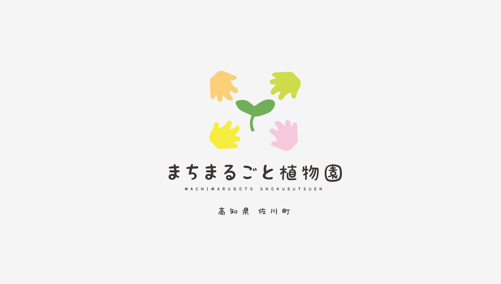
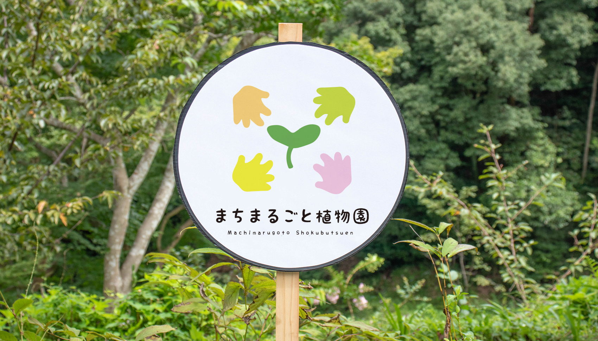
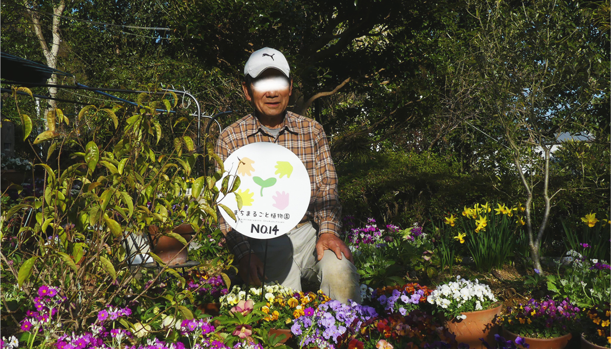

高知県 まちまるごと植物園
concept
植物を大切に育てる心
まちまるごと植物園とは、植物学の父・牧野富太郎が生まれ育った高知県佐川町という場所で、まち全体で植物に寄り添い町の魅力を発信しているまちづくり活動。私の作成したロゴマークは、プレートに印刷され町内の学校や公民館、家庭の花壇などに設置されるほか、さまざまな形で佐川町のPRに用いられています。 April 2019Logo design | ロゴマーク一般公募 最優秀賞



